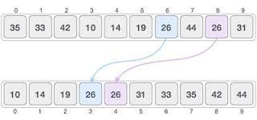
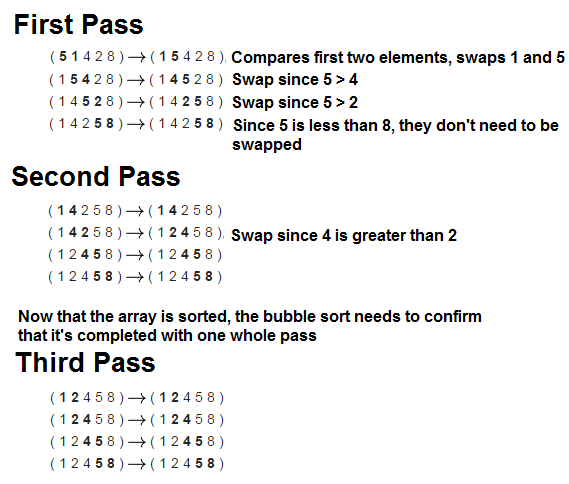
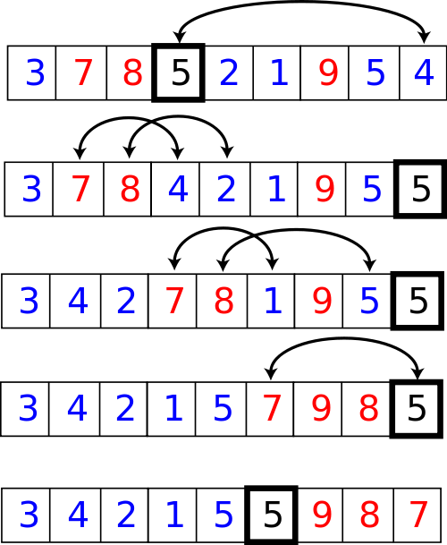
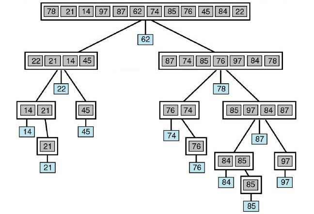
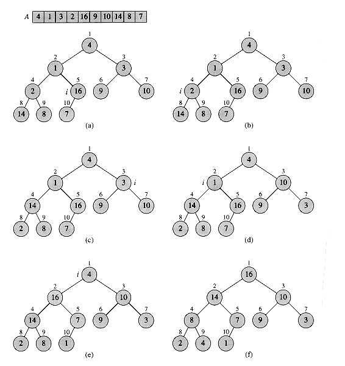

In computer science, arranging in an ordered sequence is called "sorting". Sorting is a common operation in many applications, and efficient algorithms to perform it have been developed.
The most common uses of sorted sequences are:
Making lookup or search efficient.
Making merging of sequences efficient.
Enable processing of data in a defined order.
The opposite of sorting, rearranging a sequence of items in a random or meaningless order, is called shuffling.
For sorting, either a weak order, "should not come after", can be specified, or a strict weak order, "should come before" (specifying one defines also the other, the two are the complement of the inverse of each other, see operations on binary relations). For the sorting to be unique, these two are restricted to a total order and a strict total order, respectively.
Sorting n-tuples (depending on context also called e.g. records consisting of fields) can be done based on one or more of its components. More generally objects can be sorted based on a property. Such a component or property is called a sort key.
For example, the items are books, the sort key is the title, subject or author, and the order is alphabetical.
A new sort key can be created from two or more sort keys by lexicographical order. The first is then called the primary sort key, the second the secondary sort key, etc.
For example, addresses could be sorted using the city as primary sort key, and the street as secondary sort key.
If the sort key values are totally ordered, the sort key defines a weak order of the items: items with the same sort key are equivalent with respect to sorting. See also stable sorting. If different items have different sort key values then this defines a unique order of the items.
Workers sorting parcels in a postal facility
A standard order is often called ascending (corresponding to the fact that the standard order of numbers is ascending, i.e. A to Z, 0 to 9), the reverse order descending (Z to A, 9 to 0). For dates and times, ascending means that earlier values precede later ones e.g. 1/1/2000 will sort ahead of 1/1/2001.
Stable v/s Unstable Sorting
A sorting algorithm is said to be stable if two objects with equal keys appear in the same order in sorted output as they appear in the input unsorted array.
Whereas a sorting algorithm is said to be unstable if their are two or more objects with equal keys doesn't appear in same order before and after sorting.

Stable v/s Unstable Sorting
A sorting algorithm using at most h comparisons on all inputs corresponds to a tree of height at most h. Such a tree has at most 2 × h leaves. On the other hand, each permutation of 1, ... ,N must land at a different leaf, and so there must be at least N! leaves. Putting these together, we deduce that 2 × h ≥ N! and so h ≥ log2 N! = Ω(N log N) (using Stirling's approximation). So every sorting algorithm must use at least log2 N! = Ω(N log N) comparisons in the worst case (on some inputs it can use less)
Selection Sort
(Stable comparison sort of θ(N2) complexity)
Selection sort is a sorting algorithm, specifically an in-place comparison sort. It has θ(N2) time complexity, making it inefficient on large lists, and generally performs worse than the similar insertion sort. Selection sort is noted for its simplicity, and it has performance advantages over more complicated algorithms in certain situations, particularly where auxiliary memory is limited.
The algorithm divides the input list into two parts: the sublist of items already sorted, which is built up from left to right at the front (left) of the list, and the sublist of items remaining to be sorted that occupy the rest of the list. Initially, the sorted sublist is empty and the unsorted sublist is the entire input list. The algorithm proceeds by finding the smallest (or largest, depending on sorting order) element in the unsorted sublist, exchanging (swapping) it with the leftmost unsorted element (putting it in sorted order), and moving the sublist boundaries one element to the right.
Points to note:
Selection sort is an in-place comparison sort.
Best, average and worst case time complexity is θ(N2)
It has one of the lowest number of swaps of all sorting algorithms.
# Selection sort implementation in Python 3
from random import random as r
array = [int(r() * 1024) for i in range(16)]
def sort():
for i in range(len(array)):
min_value = array[i]
min_pos = i
for j in range(i + 1, len(array)):
if array[j] < min_value:
min_value = array[j]
min_pos = j
# Swap array[i] with array[min_pos]
array[i], array[min_pos] = array[min_pos], array[i]
if __name__ == "__main__":
print("Unsorted Array: ", array)
sort()
print("Sorted Array: ", array)
Bubble Sort
(Stable comparison sort of θ(N2) complexity)
Bubble sort, sometimes referred to as sinking sort, is a simple sorting algorithm that repeatedly steps through the list to be sorted, compares each pair of adjacent items and swaps them if they are in the wrong order. The pass through the list is repeated until no swaps are needed, which indicates that the list is sorted. The algorithm, which is a comparison sort, is named for the way smaller or larger elements "bubble" to the top of the list. Although the algorithm is simple, it is too slow and impractical for most problems even when compared to insertion sort. It can be practical if the input is usually in sorted order but may occasionally have some out-of-order elements nearly in position.
Bubble sort has worst-case and average complexity both θ(N2), where n is the number of items being sorted. There exist many sorting algorithms, such as merge sort with substantially better worst-case or average complexity of θ(N log2 N). Even other θ(N2) sorting algorithms, such as insertion sort, tend to have better performance than bubble sort. Therefore, bubble sort is not a practical sorting algorithm when n is large.

# Bubble Sort implementation in Python 3
from random import random as r
array = [int(r() * 1024) for i in range(16)]
def sort():
for i in range(len(array)):
for j in range(len(array) - i - 1):
if array[j] > array[j + 1]:
array[j], array[j + 1] = array[j + 1], array[j]
if __name__ == "__main__":
print("Unsorted Array: ", array)
sort()
print("Sorted Array: ", array)
Quick Sort
(Comparison sort of θ(N log2 N) average-case complexity
Has θ(N2) worst-case complexity)
Quick Sort (sometimes called partition-exchange sort) is an efficient sorting algorithm, serving as a systematic method for placing the elements of an array in order. Developed by Tony Hoare in 1959 and published in 1961, it is still a commonly used algorithm for sorting. When implemented well, it can be about two or three times faster than it's main competitors, merge sort and heapsort.
Quick Sort is a comparison sort, meaning that it can sort items of any type for which a "less-than" relation (formally, a total order) is defined. In efficient implementations it is not a stable sort, meaning that the relative order of equal sort items is not preserved. Quicksort can operate in-place on an array, requiring small additional amounts of memory to perform the sorting. It is very similar to selection sort, except that it does not always choose worst-case partition.
Mathematical analysis of quicksort shows that, on average, the algorithm takes θ(N log2 N) comparisons to sort n items. In the worst case, it makes O(N2) comparisons, though this behavior is rare.
Example of partition function (Showing a single pass)

Showing Quick Sort as divide-&-conquer algorithm

# Quick Sort implementation in Python 3
from random import random as r
array = [int(r() * 1024) for i in range(16)]
# Lomuto Partition function
def partition(lb, ub):
pivot_index = ub
k = lb - 1
for i in range(lb, ub):
if array[i] < array[pivot_index]:
k += 1
array[k], array[i] = array[i], array[k]
k += 1
array[k], array[pivot_index] = array[pivot_index], array[k]
return k
# Quick Sort recursive implementation
def quick_sort(lb, ub):
if lb < ub:
p = partition(lb, ub)
quick_sort(lb, p - 1)
quick_sort(p + 1, ub)
# Quick Sort implementation
def sort():
quick_sort(0, len(array) - 1)
if __name__ == "__main__":
print("Unsorted Array: ", array)
sort()
print("Sorted Array: ", array)
Heap Sort
(Unstable comparison sort of θ(N log2 N) complexity)
In computer science, heapsort is a comparison-based sorting algorithm. Heap Sort can be thought of as an improved selection sort: like that algorithm, it divides its input into a sorted and an unsorted region, and it iteratively shrinks the unsorted region by extracting the largest element and moving that to the sorted region. The improvement consists of the use of a heap data structure rather than a linear-time search to find the maximum.
Although somewhat slower in practice on most machines than a well-implemented quicksort, it has the advantage of a more
favorable worst-case θ(N log2 N) runtime. Heapsort is an in-place algorithm, but it is not a stable sort.
Heap Sort was invented by J. W. J. Williams in 1964. This was also the birth of the heap, presented already by Williams as a useful data structure in its own right. In the same year, R. W. Floyd published an improved version that could sort an array in-place, continuing his earlier research into the treesort algorithm.
The heapsort algorithm can be divided into two parts.
In the first step, a heap is built out of the data. The heap is often placed in an array with the layout of a complete binary tree. The complete binary tree maps the binary tree structure into the array indices; each array index represents a node; the index of the node's parent, left child branch, or right child branch are simple expressions. For a zero-based array, the root node is stored at index 0; if i is the index of the current node, then
iParent(i) = floor((i - 1) / 2) where floor functions map a real number to the smallest leading integer
iLeftChild(i) = 2 × i + 1
iRightChild(i) = 2 × i + 2
In the second step, a sorted array is created by repeatedly removing the largest element from the heap (the root of the heap), and inserting it into the array. The heap is updated after each removal to maintain the heap property. Once all objects have been removed from the heap, the result is a sorted array.
Heap Sort can be performed in place. The array can be split into two parts, the sorted array and the heap. The storage of heaps as arrays is diagrammed here. The heap's invariant is preserved after each extraction, so the only cost is that of extraction.

# Heap Sort implementation in Python 3
from random import random as r
array = [int(r() * 1024) for i in range(16)]
def parent(index):
return (index - 1) >> 1
def right(index):
return (index << 1) + 1
def left(index):
return (index << 1) + 2
# Function to build max heap from given array
def build_max_heap():
for i in range(len(array)):
index = i
while parent(index) >= 0 and array[index] > array[parent(index)]:
array[index], array[parent(index)] = array[parent(index)], array[index]
index = parent(index)
# Iterative Heap Sort implementation
def sort():
build_max_heap()
size = len(array)
for i in range(len(array)):
array[0], array[size - 1] = array[size - 1], array[0]
size -= 1
# Swim down the top of heap until balanced
current_index = 0
while True:
max_index = current_index
if left(current_index) < size and array[left(current_index)] > array[max_index]:
max_index = left(current_index)
if right(current_index) < size and array[right(current_index)] > array[max_index]:
max_index = right(current_index)
if max_index != current_index:
array[max_index], array[current_index] = array[current_index], array[max_index]
current_index = max_index
else:
break
if __name__ == "__main__":
print("Unsorted Array: ", array)
build_max_heap()
print("Max Heap: ", array)
sort()
print("Sorted Array: ", array)